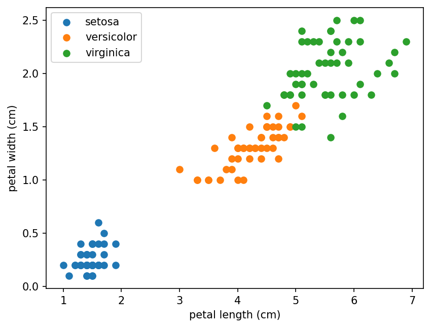

Learning from examples: the ideas behind every model
Introduction to Data Science and Machine Learning · Md Mahbub E Noor · University of Barishal
model.fit(X_train, y_train) model.predict(X_test)
We give the computer many examples: inputs (features) and, often, the right answers (labels).
An algorithm finds a rule, called a model, that maps inputs to answers.
The model predicts answers for inputs it has never seen. That is the whole point.
Ask: is the answer a category or a number?
| Question | Answer looks like | Type |
|---|---|---|
| Is this message spam? | spam / ham | Classification |
| What mark will this student get? | a number, e.g. 78.5 | Regression |
| Which flower species is this? | one of 3 names | Classification |
| How many units will sell next week? | a number | Regression |
| Will this loan be repaid? | yes / no | Classification |
The same workflow as Lecture 6, for any dataset. Most of the work is before training.
150 flowers, 4 measurements each (in cm), 3 species. It ships with scikit-learn, so it works offline.
| sepal length | sepal width | petal length | petal width | species (label) |
|---|---|---|---|---|
| 5.1 | 3.5 | 1.4 | 0.2 | setosa |
| 7.0 | 3.2 | 4.7 | 1.4 | versicolor |
| 6.3 | 3.3 | 6.0 | 2.5 | virginica |
| 4.9 | 3.0 | 1.4 | 0.2 | setosa |
| 6.4 | 3.2 | 4.5 | 1.5 | versicolor |
Two petal measurements already separate the species well. Machine learning finds such patterns automatically, in many dimensions.
import matplotlib.pyplot as plt
from sklearn.datasets import load_iris
iris = load_iris(as_frame=True)
X = iris.data
y = iris.target
for k, name in enumerate(iris.target_names):
part = X[y == k]
plt.scatter(part["petal length (cm)"],
part["petal width (cm)"], label=name)
plt.xlabel("petal length (cm)")
plt.ylabel("petal width (cm)")
plt.legend()
plt.show()
fit learns from training datascore reports accuracy on test datafrom sklearn.model_selection import train_test_split
from sklearn.neighbors import KNeighborsClassifier
from sklearn.tree import DecisionTreeClassifier
from sklearn.naive_bayes import GaussianNB
X_tr, X_te, y_tr, y_te = train_test_split(
X, y, test_size=0.3, random_state=42, stratify=y)
for model in [KNeighborsClassifier(),
DecisionTreeClassifier(random_state=0),
GaussianNB()]:
model.fit(X_tr, y_tr)
acc = model.score(X_te, y_te)
print(type(model).__name__, round(acc, 3))KNeighborsClassifier 0.978 DecisionTreeClassifier 0.978 GaussianNB 0.911
one_nn = KNeighborsClassifier(n_neighbors=1) one_nn.fit(X_tr, y_tr) print(one_nn.score(X_tr, y_tr)) print(round(one_nn.score(X_te, y_te), 3))
A 1-nearest-neighbour model scores 100% on its training data. What will it score on the test data?
one_nn = KNeighborsClassifier(n_neighbors=1) one_nn.fit(X_tr, y_tr) print(one_nn.score(X_tr, y_tr)) print(round(one_nn.score(X_te, y_te), 3))
1.0 0.933
Learning the exact exam questions. Perfect on those, lost on new ones.
Understanding the patterns, so new questions can be answered too.
Keep a test set the model never sees, and judge it only there.
WATCH FOR
Silent video: press play, pause any time.
| Word | Meaning |
|---|---|
| Feature (X) | An input column the model uses |
| Label / target (y) | The answer we want to predict |
| Model | The learned rule that maps features to a label |
| Training (fit) | Learning the rule from examples |
| Prediction | The model's answer for a new example |
| Hyperparameter | A setting we choose, e.g. k in k-nearest neighbours |
| Generalisation | Doing well on data the model has never seen |
from sklearn.datasets import load_winestratifyfrom sklearn.datasets import load_wine wine = load_wine(as_frame=True) X, y = wine.data, wine.target ...
Starter code: replace the ... with your own code
In the lab you can
Opens in a new tab and works offline. All labs: labs/START_HERE.html
supervised | Learn from labelled examples |
unsupervised | Find structure without labels |
classification | Predict a category |
regression | Predict a number |
model.fit(X, y) | Train |
model.predict(X) | Answer for new rows |
model.score(X, y) | Accuracy (classifiers) |
test set | Data the model never sees in training |
Due before Lecture 9 · [date]
Write 6 prediction questions from daily life. Label each: classification or regression, supervised or unsupervised.
For two of your questions, list 3 useful features and the label.
Repeat the 'same pattern' slide on load_breast_cancer. Report the three test accuracies.
For KNeighborsClassifier(n_neighbors=1) on breast cancer, print training and test accuracy. Explain the gap.
In 3 sentences: why do we judge a model only on data it has not seen?
Watch it again at home to revise.